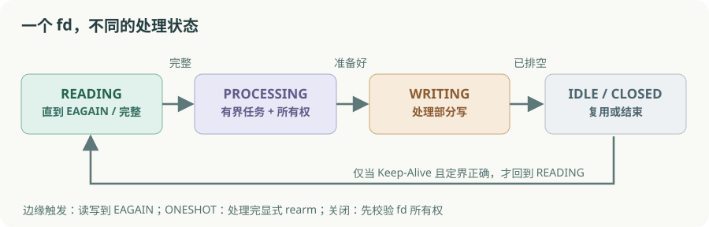

计算机系统 · 综合工程 / 28
十万个连接同时在线，不等于十万个请求同时执行
服务器要管理的是许多大部分时间都在等待的连接。如果每个连接占据一个阻塞线程，资源很快耗尽；如果把连接的读写状态交给非阻塞事件循环，则少量执行线程可以复用在众多连接之间。真正难的不是调用一次 epoll_wait，而是让每一次状态转换都正确。
本章是一份 Linux HTTP/1.1 教学服务器的设计与验收指南，不是已交付的生产服务器；“十万连接”和特定 RPS 都只能在指定环境中被测量，不能由架构名称推导。
28.1 先分清“就绪通知”与“工作已经完成”
epoll 告诉程序哪些描述符可能可以不阻塞地读写，不会替你读完报文、解析 HTTP 或发送所有响应。一个连接可在“读到半个请求头”“等待业务结果”“写缓冲尚未排空”之间移动。现代 Linux 上 epoll 避免了 select 的位图上限，但“复杂度只等于就绪 fd 数”不是所有工作负载下的完整性能公式。

在 EPOLLET 边缘触发模式下，fd 必须设为非阻塞，并按照协议与缓冲区容量读取/写入到 EAGAIN（或 EOF、硬错误等边界）。EPOLLONESHOT 可防止同一注册项被多个执行者重复处理，但 Worker 完成后需要 EPOLL_CTL_MOD 重设关注事件。
/* Linux 结构性伪代码：省略系统调用返回值、初始化和清理 */
for (;;) {
n = epoll_wait(epfd, events, MAX_EVENTS, timeout_ms);
for (i = 0; i < n; ++i) {
c = find_connection(events[i].data);
if (c_is_stale(c)) continue; // 代际号/所有权校验
if (readable(c)) read_until_eagain_or_buffer_limit(c);
if (request_complete(c)) schedule_bounded_work(c);
if (writable(c)) flush_until_eagain_or_done(c);
if (can_continue(c)) rearm_oneshot_for_needed_events(c);
else close_and_release(c);
}
}这段伪代码不保证线程安全或独立编译；实际实现需要决定由哪个线程读写 fd，并让连接状态、任务生命周期和 close 操作在同一个所有权协议下发生。
28.2 一条连接为什么需要状态机？
TCP 提供字节流而不是“一个 read 对应一个 HTTP 请求”。网络可能把 GET / HTTP/1.1\r\nHost: ...\r\n\r\n 拆成多个片段，也可能在一次读操作中带来连续多个请求。解析器必须记住上次停在哪里。
交互：沿着一条 Keep-Alive 连接走四步
点击查看事件和下一状态；这是顺序化的教学状态机，真实程序可能多次经历 READING / WRITING。
当读到 0，意味着对端按 TCP 语义关闭了发送方向，必须结合未完成请求判断如何结束；当读写返回 EINTR 时可以按契约重试；EAGAIN 则表示当前暂不可继续，不是故障。写缓冲只保留尚未发送的字节，等 EPOLLOUT 后继续；不能在一次 write 后就把响应对象释放。
28.3 线程池并不是“越多越好”
一种清晰的起点是：I/O 线程独占连接 fd 的读取与写入，Worker 只接收已经解析的请求并生成响应；结果经由有界队列交回 I/O 线程。这样避免“两个 Worker 同时改同一个连接”的竞争。若选择由 Worker 直接读写，必须引入严格的 fd 所有权移交和 EPOLLONESHOT rearm 协议。
| 资源 | 背压/上限 | 过载时的正确行为 |
|---|---|---|
| 监听队列、fd | 进程 fd 限额、连接数量 | 拒绝新连接或按策略关闭，记录原因 |
| 任务队列 | 固定容量与 Worker 数量 | 暂停读新请求或返回适当的繁忙响应，不无限累积任务 |
| 请求/响应缓冲 | 头部大小、请求体大小、待写字节数 | 限制大小，避免慢客户端耗尽内存 |
| 连接超时 | idle/read/write timeout | 及时回收空闲或异常连接，不泄漏定时器节点 |
用互斥锁和条件变量实现队列通常比一开始写无锁 MPSC 更容易审查；先通过竞态与压力测试再做热点优化。跨线程使用 fd 时还应防止旧 fd 被关闭并重新分配后，陈旧事件错误操作新连接：为连接标识加入代际号或使用安全的对象生命周期管理。
28.4 Keep-Alive 是报文定界问题，也是生命周期问题
HTTP/1.1 默认允许持久连接，但不是把 Connection: keep-alive 这行原样回送就完成了。解析请求与响应必须知道消息体何时结束：按 Content-Length、分块编码或请求/状态的特殊规则判断；遇到冲突定界信息要安全地拒绝，防止请求走私风险。
# 测试用完整 HTTP/1.1 请求（CRLF 换行）
GET /health HTTP/1.1
Host: 127.0.0.1
Connection: keep-alive
# 真实报文的行结束符是 \r\n；此处为便于阅读而换行响应至少需要准确的状态行、首部、空行、消息体与长度。若教学服务器不支持 chunked 请求、流水线或其他扩展，应明确拒绝不支持的请求或安全关闭，不能半解析后把残余字节错当作下一条请求。关闭连接通常先完成待写数据和资源回收；不要把 SO_LINGER 零超时导致的 RST 当作普遍“优雅关闭”策略。
所有优化必须服从协议与正确性
sendfile、多 Reactor、SO_REUSEPORT、零拷贝或无锁队列都只是可选方案，不能修复错误的状态机。生产环境还要考虑 TLS、路径安全、权限、请求超时、日志和异常隔离；本文未声称完整实现它们。
28.5 用可复现的证据收官
先进行功能测例：拆分的请求头、短读短写、连续 Keep-Alive 请求、客户端半关闭、超大首部、错误的 Content-Length、队列满、主动断开、超时回收和高并发同时关闭。再在隔离环境用 wrk 测量，不向公共站点施压。
# 在你自己控制的本机服务上运行示例
wrk -t2 -c100 -d30s --latency http://127.0.0.1:8080/health
# 固定请求内容、CPU/内核版本、fd 限额，重复多轮记录原始结果记录吞吐量、错误率、P50/P99 延迟、RSS、fd 数、CPU 利用率及异常关闭数量。如果没有真实测量，就不要写“达到 50k RPS”；架构优势也必须在相同硬件和负载、经过预热的条件下比较。对于高并发连接数，还需检查内存、端口、fd 限额和客户端压测器本身的瓶颈。
终章自测
如果一个连接的响应只发送了一半，Worker 就关闭了 fd，并把同一整数 fd 用于新连接，可能造成什么错误？
查看推导
旧请求的剩余数据丢失；更危险的是陈旧任务/事件可能错误地写入或关闭新连接。只有明确的所有权、引用生命周期与代际校验才能消除这类竞态。
参考与下一步
epoll(7) · RFC 9112（HTTP/1.1 消息格式） · RFC 9110（HTTP 语义）。把第 1 章的“一个程序如何运行”延伸到第 28 章的“成千上万请求如何安全共存”，课程的核心不是记住某个 API，而是学会跨层验证每一个假设。